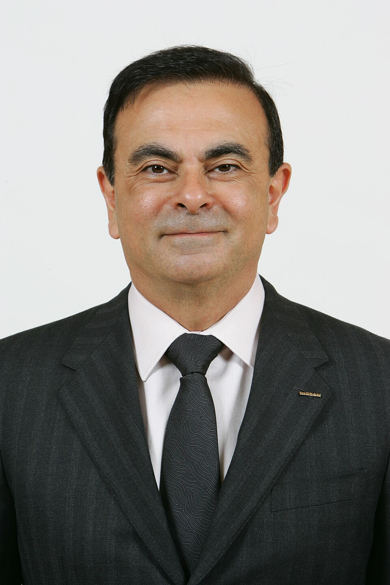
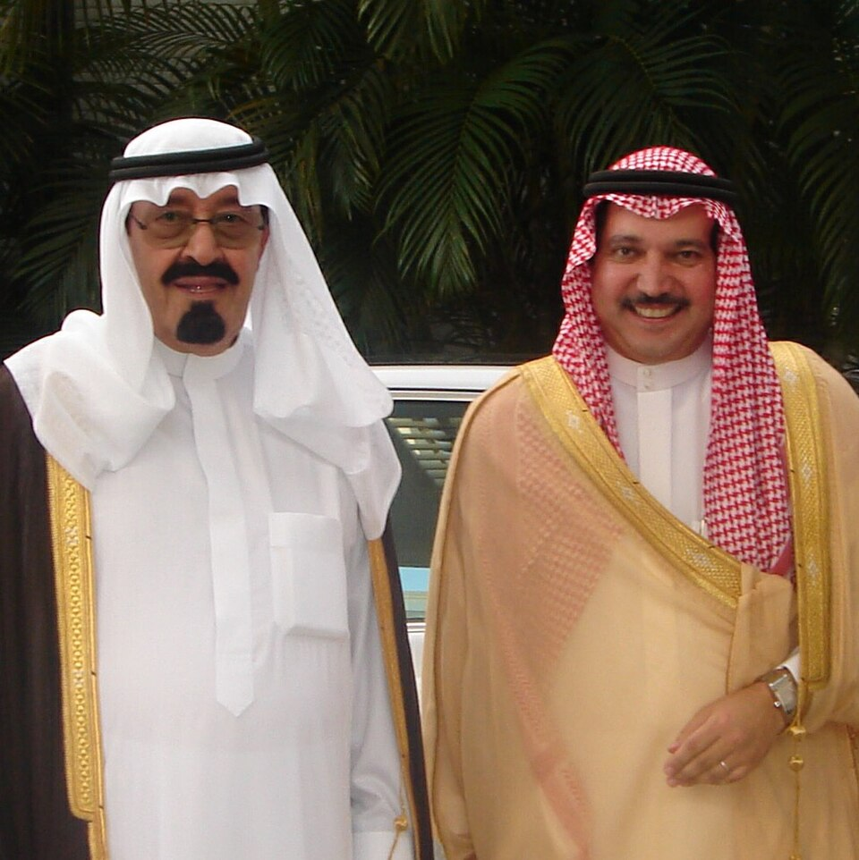

カルロス・ゴーン
かるろす・ごーん
日産会長・ルノー会長兼CEO
役割：日産の再建を主導し、報酬過少記載・特別背任等で起訴された被告人
その後：保釈後にレバノンへ逃亡。日本での刑事判決は未確認12
1999年〜2026年
日産の再建を主導したカルロス・ゴーン氏は、複数会社の会長・CEOを兼任する過程で、役員報酬と会社資金の管理権限を集中させた。1
検察は、実際の報酬の一部を有価証券報告書に記載せず、私的な投資損失や会社資金・経費の利用にも関与したと主張した。2
2018年の内部調査と逮捕を契機に事件が公表され、ケリー氏と日産法人の判決・処分が先行した一方、ゴーン氏本人の日本での公判は開かれていない。3

1999年、経営危機にあった日産はルノーの資本参加を受け、カルロス・ゴーン氏が再建を主導した。ゴーン氏は1999年6月に最高執行責任者、2001年6月に社長兼CEOとなり、2005年5月にはルノーCEOも兼任した。日産の社内資料は、再建を担った人物が日産、ルノー、三菱自動車のアライアンスの中心となる一方。人事と報酬を含む権限を一人に集中させたと整理している。ゴーン氏は日産会長とCEO、ルノー会長とCEOなどを兼ね、複数法人にまたがる経営判断と報酬決定の中心に位置した。ルノーの大株主であるフランス政府と日産の経営自主性をめぐる緊張も、事件後のアライアンス交渉の背景となった。145
ゴーン氏は、日産の破綻を救った救世主として日産社内においてある種の神格化が進んでおり、ゴーン氏の活動は社内では不可侵領域化していた。また、仮にルノーの筆頭株主であるフランス政府が日産の経営に介入してきた場合には日産を守ってくれるはずであるとして、尊敬と信頼を集めていた。しかし、一方で、ゴーン氏及びケリー氏は、反論したり疑義を唱えたり指示に従わない役職員らを異動させたり、事実上退職に追い込んだりするなどしていた。トップラインマネジメントの人事決定権は事実上ゴーン氏のみが握っており、反対意見を言うと排除されると示唆された役職員もいる。そのため、一部の役職員はゴーン氏やケリー氏の指示に疑問を抱いたものの、拒否したり他の者に報告したりすることができなかった。
意味：尊敬や再建実績への信頼と、反対者が排除される恐怖が同時に存在した企業風土を描いている。
2010年3月期の初期年度から、1億円を超える役員報酬の個別開示制度が適用された。2011年3月期について、証券取引等監視委員会はゴーン氏の実際の総報酬を約17億7,700万円、報告書の記載額を9億8,200万円と公表した。その後も報酬の繰延べや将来支払の仕組みが続き、株価連動型報酬の手続も社内で扱われた。日産側は、開示される報酬を少なくするために実際の報酬額より減額した金額を記載したと説明し、ゴーン氏側は将来の報酬は確定しておらず記載義務はないと主張した。2019年の社内調査では、開示を回避しつつゴーン氏が受領しようとした報酬を200億円以上と推定したが、日産自身がこの金額を社内調査の評価として示しており。刑事裁判で全額が確定したことを意味しない。報酬の記載方法だけでなく、誰が金額を決定し、どの機関が承認し。将来支払の合意をどの時点で形成したかが争点となった。2678
証券取引等監視委員会は、本日、金融商品取引法違反（虚偽有価証券報告書提出）の嫌疑で、嫌疑法人１社及び嫌疑者２名を東京地方検察庁に告発した。告発の対象となった犯則事実については下記のとおり。 犯則嫌疑法人日産自動車株式会社は、横浜市に本店を置き、自動車の製造及び販売等を目的とする会社であって、その発行する株券を株式会社東京証券取引所市場第一部に上場しているもの、犯則嫌疑者Ａは犯則嫌疑法人の代表取締役会長等であったもの、犯則嫌疑者Ｂは犯則嫌疑法人の代表取締役等であったものであるが、犯則嫌疑者両名は、共謀の上、 日産自動車株式会社の業務に関し、平成２３年６月末、平成２３年３月期の連結会計年度につき、犯則嫌疑者Ａの報酬、賞与その他その職務執行の対価として日産自動車株式会社及びその主要な連結子会社から役員として受ける財産上の利益であって、当該連結会計年度に係るものが約１７億７７００万円であったにもかかわらず、その一部を隠ぺいして、「コーポレート・ガバナンスの状況」欄内の「役員ごとの連結報酬等の総額等」欄に犯則嫌疑者Ａの総報酬及び金銭報酬をいずれも９億８２００万円と記載した有価証券報告書を提出し
意味：監視委員会が、報酬差額だけでなく、ゴーン氏とケリー氏の「共謀」として告発事実を構成したことが分かる。
2008年の金融危機時、ゴーン氏の資産管理会社は金融機関との為替スワップ取引で損失を抱えた。検察は、約18億5,000万円の評価損を日産側へ移す構想があったとして、会社法上の特別背任に当たると構成した。新生銀行側が契約移転に取締役会決議を求めたと報じられ、日産側への付替えは実現しなかったとされる。ゴーン氏側は、日産に損害はなく、会社から一時的な信用供与を受けただけだと主張した。事件では、損失が実際に会社の財産から流出したかだけでなく、会社の信用を個人の取引に利用したことが任務違背に当たるかも争点となった。日産の社内調査は、中東販売代理店に関係する支出やCEOリザーブも調査対象とし、会社資金の用途と最終的な受益者を確認しようとしたが。全経路は公的資料で確定していない。397
取締役カルロス ゴーン氏（以下、「ゴーン氏」といいます。）は、当社の社内調査の結果、本人主導による、以下の重大な不正行為が確認されたため、当社取締役会は、平成30年11月22日付でゴーン氏について代表取締役及び会長職を解職しました。 ①長年にわたり、開示される自らの報酬を少なくするために、実際の報酬額よりも減額した金額を有価証券報告書に記載していたという不正行為 ②目的を偽って、私的に当社の投資資金を支出するなどした不正行為 ③その他、私的な目的で当社の経費を支出するなどした不正行為 こうした状況に鑑み、ゴーン氏の取締役の職についても解くことが相当であると判断いたしました。 取締役グレッグ ケリー氏（以下、「ケリー氏」といいます。）は、当社の社内調査の結果、上記ゴーン氏に係る重大な不正行為の事案の首謀と判断されたため、当社取締役会は、平成30年11月22日付でケリー氏について代表取締役を解職しました。
意味：これは刑事判決ではなく、日産取締役会が解任理由として株主に示した公式説明である。
2018年、日産はゴーン氏らの報酬と資金利用について、監査役への内部通報を契機に社内調査を進めたと説明した。2018年11月19日、東京地検特捜部はゴーン氏を金融商品取引法違反の疑いで逮捕した。11月22日、日産取締役会はゴーン氏とケリー氏を代表取締役から解職した。日産は両者を重大な不正行為の中心と評価したが、この評価は日産の社内調査と株主総会資料上の説明であり、ゴーン氏本人の刑事有罪判決ではない。12月10日には証券取引等監視委員会が日産法人、ゴーン氏、ケリー氏を告発した。日産の2019年5月資料は、約900万通の書類を収集し、245,000通以上を検討し、70人超の役員・従業員に聞き取りを行ったと記載した一方。ゴーン氏とケリー氏へのインタビューは行っていないと説明した。この調査範囲と当事者本人への聞き取りの欠如は、社内調査の評価を読む際に確認すべき事実として資料に残された。7106
当社は、2018年春ころの当社監査役に対する内部通報を受けて、ゴーン氏主導による以下の重大な不正行為（以下「不正行為」と総称します。）について、内部調査を行ってまいりました。 ① 長年にわたり、開示される自らの報酬を少なくするために、実際の報酬額よりも減額した金額を有価証券報告書に記載していたという不正行為 ② 目的を偽って、私的に当社の投資資金を支出するなどした不正行為 ③ その他、私的な目的で当社の経費を支出するなどした不正行為 今回の不正行為の根本原因は、ゴーン氏への人事・報酬を含む権限の集中にありました。ゴーン氏は、一部管理部署の権限を、元代表取締役グレッグ・ケリー氏をはじめとする特定少数の者に集中させることで、当該部署をブラックボックス化し、ゴーン氏の私的利益の追求を探知することが難しい体制を作りあげていました。その結果、一部の管理部署の牽制機能が、ゴーン氏の私的利益の追求に関する問題点については必ずしも有効に機能していませんでした。当社は、これを内部統制報告書において開示すべき重要な不備に該当すると判断し、上記②の訂正報告書を提出しました。
意味：内部通報を起点とする調査の経緯と、日産自身が内部統制上の「重要な不備」と判断した内容が示されている。
日産のガバナンス改善特別委員会は、2018年6月に独立社外取締役が2名就任するまで、取締役会の開催時間が平均して20分足らずだったと記した。また、ゴーン氏が人事本部、CEOオフィス、秘書室、法務室、内部監査室などの責任者を特定少数の者に集中させ。報酬や会社資金に関する問題を「CEO案件」として説明していたと報告した。管理部門が閉鎖的になり、監査役や経理部に情報が伝わりにくい構造が形成されたとされた。報告書は、取締役会が質問や意見を出す場にならず、異論を述べた取締役や監査役が会議後に呼び出される状況も記載した。人事と報酬の決定権限が同じ経営者に集まり、監督する側が情報を得る経路も限定されていたため、個別の支出や報酬処理の検討が全体として共有されなかった。114
当社は、有価証券報告書中の「第一部 企業情報」・「第４ 提出会社の状況」・「６ コーポレート・ガバナンスの状況等」・「（１）コーポレート・ガバナンスの状況」の役員報酬に関する情報において、実態とは異なる記載を行った。 この結果、当社は、関東財務局長に対し、以下のとおり、金融商品取引法第172条の４第１項に規定する「重要な事項につき虚偽の記載」がある以下の有価証券報告書を提出した。 ・平成27年３月期有価証券報告書（平成27年６月25日提出） ・平成28年３月期有価証券報告書（平成28年６月24日提出） ・平成29年３月期有価証券報告書（平成29年６月29日提出） ・平成30年３月期有価証券報告書（平成30年６月28日提出） 当社は、関東財務局に対し、平成28年４月８日、上記の重要な事項につき虚偽の記載がある平成27年３月期有価証券報告書を参照情報とする発行登録追補書類を提出し、当該発行登録追補書類に基づく募集により、平成28年４月15日、社債券を125,000,000,000円で取得させた。 上記の違法行為について金融商品取引法に基づき算定される課徴金の額は、24億2,489万5,000円である。
意味：問題が役員報酬の継続開示だけでなく、社債募集の発行開示にも及んだという当局の整理である。
2019年3月に保釈されたゴーン氏は、同年12月31日に保釈条件に反して日本を出国し、レバノンへ到着した。2020年1月のベイルート記者会見で、ゴーン氏は日本の長期勾留、取調べ、司法制度を批判し。事件は日産と日本側による「陰謀」だと主張した。日本政府は、国外への逃亡を刑事裁判そのものから逃避した行為と説明し、国際手配中とした。本人の日本での公判は、2026年11月15日時点で開かれていない。逃亡支援をめぐっては、米国人のマイケル・テイラー氏とピーター・テイラー氏が米国で起訴され、日本へ移送された。逃亡後は、日産側の社内調査による評価、検察の主張、本人の反論が。同じ事件について異なる位置付けで残った。1213
当社は、特別委員会報告書を踏まえ、不正行為の主な根本原因は、ゴーン氏への人事・報酬を含む権限の集中であると考えております。ゴーン氏は、経営者不正を発見し得る一部管理部署の権限を、ケリー氏をはじめとする特定少数の者に集中させることで、当該部署をブラックボックス化し、ゴーン氏の私的利益の追求を探知することが難しい体制を作りあげました。その結果、一部の管理部署の牽制機能が、ゴーン氏の私的利益の追求に関する問題点については必ずしも有効に機能しませんでした。 日産の再建への貢献を背景に、ゴーン氏に対する個人崇拝が進み、ゴーン氏の活動を日産社内で不可侵領域とみなす風潮が形成されていました。ゴーン氏が大株主のトップを兼任したことで、その傾向はさらに強くなりました。これを背景に、ゴーン氏は、人事と報酬に関する権限を実質的に掌握することで、自身への権限集中を実現しました。
意味：事件後の日産が、原因分析を「個人の不正」だけでなく、人事・報酬権限の集中と管理部門の機能不全として整理した箇所である。
2022年3月3日、東京地裁はケリー氏に金融商品取引法違反で懲役6か月・執行猶予3年。日産法人に罰金2億円を言い渡した。2025年2月4日、東京高裁はケリー氏の有罪を維持したと報じられたが、最高裁で確定したかは未確認である。金融庁は日産に課徴金24億2,489万5,000円の納付命令を決定し、2022年4月に変更処分を公表した。日産は2020年2月にゴーン氏へ100億円の損害賠償請求を公表したが、終局判決と回収額は未確認である。刑事、民事、行政の手続はそれぞれ対象と判断時点が異なるため。日産法人に対する罰金や課徴金をゴーン氏本人の有罪判決と同一視できない。ケリー氏についても、控訴審判決が報じられた段階と最高裁で確定した段階を区別する。ゴーン氏本人の日本での裁判が開かれていないことから、事件全体は2026年11月15日時点で未終結である。日産の制度変更と各当局の処分が進んでも、本人の主張を法廷で検証する手続が実施されていない点は、事件の現在位置を示す重要な相違である。14151617
有価証券報告書における開示を回避しつつゴーンが受領しようとしていた報酬は推定で総額200億円以上に上り、しかもその一部はゴーンに支払い済みである。また、役員報酬の名目以外にゴーンが日産に現に不正に支出させ、あるいは支出させようとしていた金額は少なくとも合計150億円に上る。 以上のとおり、ゴーンらの一連の不正の規模は全体で約350億円以上という極めて巨額のものとなる。そこで、当社は、ゴーン、ケリーに対し、これらの不正行為に関し、損害賠償請求をはじめとする毅然とした法的措置をとる考えである。 なお、ゴーン、ケリー以外の役員のSAR行使による支払いに不正な点があった点に関しては、これらの役員らは、いずれも、自己の報酬が不正な手法により増額されたことを認識しておらず、またケリーらに対してそのような指示ないし依頼をした事実もないから、不正行為に関与したとみる余地はない。
意味：日産が刑事告発対象の報酬問題に加え、会社資金・経費の問題を含む独自の総額評価を示した箇所である。これは社内調査の評価であり、全額が刑事判決で確定したことを意味しない。
本件は、会社の開示、経営者の報酬、会社資金の利用、国際アライアンス。逃亡後の刑事手続が重なった事件である。各資料は認定、主張、未確認事項を異なる形で示している。4

| 日産自動車本社 | 神奈川県横浜市西区高島1-1-1 | 内部調査・取締役会・会長職の拠点 | 23 |
| 東京地方検察庁 | 東京都千代田区霞が関1-1-1 | 逮捕・起訴を担った検察庁 | 24 |
| 東京地方裁判所 | 東京都千代田区霞が関1-1-1 | ゴーン・ケリー事件の刑事裁判所 | 25 |
| 東京拘置所 | 東京都葛飾区小菅1-35-1 | ゴーン氏らの勾留先 | 24 |
| 羽田空港 | 東京都大田区羽田空港 | ゴーン氏が日本を出国した経路の一つとして報じられた空港 | 12 |
| 関西国際空港 | 大阪府泉佐野市泉州空港北1 | 逃亡時のプライベートジェット経路として報じられた地点 | 13 |
| ベイルート | レバノン共和国ベイルート | ゴーン氏の逃亡先・記者会見地 | 12 |
| ルノー本社 | フランス・ブローニュ＝ビヤンクール | ルノー取締役会・アライアンス交渉の拠点 | 26 |
| 東京証券取引所 | 東京都中央区日本橋兜町2-1 | 有価証券報告書提出会社の日産が上場する市場 | 27 |
| 米国証券取引委員会 | 米国ワシントンD.C. | 日産の米国開示問題を扱った当局 | 28 |
事件の金銭的な構造は、日産から支払われる報酬を有価証券報告書にどのように記載したかという開示問題と、ゴーン氏の資産管理会社の損失や中東販売代理店関連の支出を日産側が負担したとされる問題に分かれる。ゴーン氏側は報酬の確定と日産の損害を争っている。67
かるろす・ごーん
日産会長・ルノー会長兼CEO
役割：日産の再建を主導し、報酬過少記載・特別背任等で起訴された被告人
その後：保釈後にレバノンへ逃亡。日本での刑事判決は未確認12
ぐれっぐ・けりー
日産代表取締役
役割：ゴーン氏の報酬開示を支えたとして起訴された
その後：懲役6か月・執行猶予3年。2025年控訴審で有罪維持、最高裁での確定は未確認15
さいかわ・ひろと
日産CEO
役割：事件発覚後の取締役会でゴーン氏解職を主導した経営側の中心人物
その後：自身のSAR処理問題が公表され、2019年に辞任8
はちごう・ひろと
日産社長兼CEO
役割：ゴーン事件後の経営体制で社長を務めた
その後：日産IRに記載された事件後の経営体制21
じゃん＝どみにく・すなーる
ルノー会長
役割：ゴーン氏後のルノー側トップとしてアライアンス再構築を担った
その後：2019年のルノー新体制20
てぃえりー・ぼろれ
ルノーCEO
役割：2019年にルノーCEOへ就任した
その後：ルノー新体制の一員20
ぶるーの・るめーる
フランス経済相
役割：ルノーの大株主であるフランス政府を代表してアライアンス問題に関与
その後：政治家による刑事関与は未確認5
元米軍特殊部隊関係者
役割：ゴーン氏の逃亡支援で米国で起訴され、日本へ移送された
その後：米国司法省資料に手続を記載13
マイケル氏の息子
役割：逃亡支援事件の共犯者として起訴された
その後：米国から日本へ移送された13

サウジ系実業家
役割：日産の中東取引・資金供与をめぐる資料で名前が出た
その後：刑事有罪は未確認7
にしおか・せいいち
ガバナンス改善特別委員会共同委員長
役割：日産の取締役会と権限集中の問題を調査した
その後：特別委員会報告書を公表11
法人・上場会社
役割：内部通報を契機に社内調査を行い、ゴーン氏らを告発した
その後：罰金・課徴金、損害賠償請求。ガバナンス改善を負担7
行政機関
役割：虚偽有価証券報告書提出事件を告発し、課徴金を勧告した
その後：開示監督を実施6
行政機関
役割：日産への課徴金納付命令を決定した
その後：2022年4月に変更処分を公表16
捜査機関
役割：ゴーン氏らを虚偽記載・特別背任で捜査・起訴した
その後：ゴーン氏は捜査を「陰謀」と主張した12
相関図は、報酬開示をめぐる経営陣、ルノーとの資本関係、中東取引と逃亡支援の外部関係者。内部調査・捜査・行政機関を分けて示す。闇の人脈に関する線は、調査メモで指摘・報道・認定された関係を示し、刑事認定の有無を区別する。
盟友・上司と部下。ケリー氏はゴーン氏の報酬開示を法務・取締役会面から支えたとされ、両者は共謀して過少記載したとして起訴された。日産は両者を重大不正の中心と評価したが、ケリー氏は一貫して違法行為を否認した。日産株主総会参考書類10
上司と部下・対立。西川氏はゴーン体制下の幹部だったが、事件発覚後は取締役会でゴーン氏解職を主導した。後に西川氏自身のSAR処理が問題となり辞任した。日産社内調査8
盟友・資本関係。ゴーン氏はルノーと日産のアライアンスの象徴で、双方の会長・CEOを兼任した。事件後、ルノーはスナール氏・ボロレ氏体制へ移行した。日産IR20
資金の出し手と受け手に近い資本関係。フランス政府はルノーの大株主で、日産への影響力拡大をめぐる緊張があった。政治家による事件関与の刑事認定は未確認。国会会議録5
資金の出し手と受け手。中東販売代理店・資金供与関連で両者の接点が問題となった。刑事判決で不正な金銭授受が確定したことは未確認。日産2019年5月14日資料7
逃亡支援。保釈中のゴーン氏を日本からレバノンへ移送した疑いで、テイラー親子が米国で起訴された。米国司法省13
対立・確執。日産はケリー氏をゴーン氏の不正の首謀者と評価して解職した。ケリー氏は日産の利益のために行動したと主張した。日産株主総会参考書類10
裏切り・告発に近い関係。西川氏ら経営陣はゴーン氏を内部調査・刑事告発の対象にした一方、自身の報酬処理も問題化した。日産社内調査8
庇護・対立。特別委員会は、ゴーン氏が異論を唱える取締役・監査役を会議後に呼び出し、再任しないことがあったと指摘した。日産ガバナンス改善特別委員会11
庇護・萎縮。委員会は、ゴーン氏が日産再建の救世主として神格化され、反対意見を述べる従業員が異動・退職に追い込まれる懸念があったと記載した。日産ガバナンス改善特別委員会11
資本関係・対立。ルノーの議決権・取締役指名権をめぐり、日産の経営自主性とアライアンス維持が対立軸になった。日産IR20
盟友・交渉相手。2019年のルノー新体制後、両者はアライアンスの再構築を担った。日産IR20
対立・確執。検察は虚偽記載・特別背任で起訴し、ゴーン氏は捜査を「陰謀」と批判した。陰謀説は当事者の主張であり、公的認定ではない。法務省12
対立・確執。日本政府は逃亡を刑事裁判からの逃避と批判し、ゴーン氏側は日本の司法制度を批判した。法務省12
対立・刑事手続。米国司法省は日本への身柄引渡し手続を進め、米国裁判所で争われた。米国司法省13
2018年6月に2名の独立社外取締役が新たに就任するまでは、取締役会の開催時間は平均して20分足らずであった。 ゴーン氏は、取締役会において、質問や意見が出ることを嫌い、意見等を述べた取締役や監査役を会議後自室に呼んだり、いわゆる「うるさい監査役」については再任しなかった。何も言わない監査役を探してこいと言われた者もいる。取締役会は活発な議論を行う雰囲気ではなかった。
意味：取締役会が短時間で終わり、異論を述べる監査役が敬遠されたという、監督機能の実態に関する委員会の認定である。
公的資料で確認できる中心は、日産資金と中東販売代理店関連先、国外逃亡支援。ルノーとフランス政府の資本関係である。暴力団、総会屋、仕手筋との関係は本調査の公的資料では確認できず。報道・指摘・認定を混同しない。
ジュファリ関連先 指摘
スハイル・バーワン関連先 報道
マイケル・テイラー、ピーター・テイラー 認定
レバノン当局・政治家 報道
フランス政府、ルノー 指摘
組織名・個人名 確認できない
組織名・個人名 確認できない
具体的受益者・口座 確認できない
ゴーン氏は、人事本部、CEOオフィス、秘書室、法務室、内部監査室等、数々の主要な部署の責任者たる地位をケリー氏をはじめとする特定少数の者に集中させ、ゴーン氏の報酬や会社資金・経費の私的利用に関与する役職員を限定した。これらの責任者は、報酬支払いや資金の私的利用に関連する問題を他部署などから指摘された場合、「CEO案件」であると説明するなどして詳細の説明を拒んだ。これにより、ゴーン氏は一部の管理部署のブラックボックス化を実現した。これらの責任者や部署を通じて、ゴーン氏の報酬等に関する検討や会社資金・経費の私的利用が実行されていたため、本件不正行為等が監査役や他部署（経理部等）に知られることが阻まれてきた。
意味：「CEO案件」という言葉が、支出や報酬への社内の追及を止める機能を果たしたと報告書は記述している。
| 立場 | 得たもの | 失ったもの | 内容 | 出典 |
|---|---|---|---|---|
| ゴーン氏 | 200億円以上・150億円以上の可能性 | 役職・社会的信用 | 日産社内調査の推定で、刑事判決による全額確定ではない | 8 |
| ケリー氏 | 個人的利益額は未確認 | 懲役6か月・執行猶予3年等 | 2025年控訴審で有罪維持、最高裁での確定は未確認 | 15 |
| 日産株主 | 未確認 | 株価変動・信用低下・訴訟費用 | 事件単独の株価損失額は未確認 | 4 |
| 日産法人 | 未確認 | 罰金2億円・課徴金24億2,489万5,000円 | 調査・訴訟費用も負担 | 18 |
| ルノー | アライアンスの資本関係 | 統治構造の再構築負担 | ゴーン氏への依存を再構築する必要が生じた | 20 |
| 債権者・取引先・従業員 | 未確認 | 企業信用・取引関係への間接的影響 | 個別金額は未確認 | 29 |
| 日本の資本市場 | 制度再点検の契機 | 役員報酬開示への信頼低下 | 経済的効果の個別額は未確認 | 2 |
| 日本の刑事裁判 | 2026-11-15時点 | 公判・判決は未確認 |
金融商品取引法違反、会社法違反（特別背任）等で起訴。保釈中に逃亡し、国際手配中と日本政府が説明12
| 東京地裁 | 2022-03-03 | 懲役6か月・執行猶予3年 |
| 東京高裁 | 2025-02-04 | 有罪維持 |
| 米国の刑事手続 | 2020年〜 | 米国から日本へ移送 |
ゴーン氏逃亡支援。本調査で最終判決は未確認13
| 東京地裁 | 2022-03-03 | 罰金2億円 |
虚偽有価証券報告書提出。法人処罰の判決30
| 日産公表 | 2020-02-12 | 100億円を請求 |
損害賠償請求。終局判決・回収額は未確認17
| 民事手続 | 2026-11-15時点 | 請求継続と報じられた |
損害賠償請求。終局結果は未確認15
| 金融庁 | 2019-12-10 | 課徴金24億2,489万5,000円 |
| 金融庁 | 2022-04-26 | 課徴金納付命令変更処分 |
| 米国SEC | 2019-09 | 和解を公表 |
米国上場証券の開示問題。和解金の正確な内訳は未確認21
証券取引等監視委員会は、本日、金融商品取引法違反（虚偽有価証券報告書提出）の嫌疑で、嫌疑法人１社及び嫌疑者２名を東京地方検察庁に告発した。告発の対象となった犯則事実については下記のとおり。 犯則嫌疑法人日産自動車株式会社は、横浜市に本店を置き、自動車の製造及び販売等を目的とする会社であって、その発行する株券を株式会社東京証券取引所市場第一部に上場しているもの、犯則嫌疑者Ａは犯則嫌疑法人の代表取締役会長等であったもの、犯則嫌疑者Ｂは犯則嫌疑法人の代表取締役等であったものであるが、犯則嫌疑者両名は、共謀の上、 日産自動車株式会社の業務に関し、平成２３年６月末、平成２３年３月期の連結会計年度につき、犯則嫌疑者Ａの報酬、賞与その他その職務執行の対価として日産自動車株式会社及びその主要な連結子会社から役員として受ける財産上の利益であって、当該連結会計年度に係るものが約１７億７７００万円であったにもかかわらず、その一部を隠ぺいして、「コーポレート・ガバナンスの状況」欄内の「役員ごとの連結報酬等の総額等」欄に犯則嫌疑者Ａの総報酬及び金銭報酬をいずれも９億８２００万円と記載した有価証券報告書を提出し
意味：監視委員会が、報酬差額だけでなく、ゴーン氏とケリー氏の「共謀」として告発事実を構成したことが分かる。
当社は、有価証券報告書中の「第一部 企業情報」・「第４ 提出会社の状況」・「６ コーポレート・ガバナンスの状況等」・「（１）コーポレート・ガバナンスの状況」の役員報酬に関する情報において、実態とは異なる記載を行った。 この結果、当社は、関東財務局長に対し、以下のとおり、金融商品取引法第172条の４第１項に規定する「重要な事項につき虚偽の記載」がある以下の有価証券報告書を提出した。 ・平成27年３月期有価証券報告書（平成27年６月25日提出） ・平成28年３月期有価証券報告書（平成28年６月24日提出） ・平成29年３月期有価証券報告書（平成29年６月29日提出） ・平成30年３月期有価証券報告書（平成30年６月28日提出） 当社は、関東財務局に対し、平成28年４月８日、上記の重要な事項につき虚偽の記載がある平成27年３月期有価証券報告書を参照情報とする発行登録追補書類を提出し、当該発行登録追補書類に基づく募集により、平成28年４月15日、社債券を125,000,000,000円で取得させた。 上記の違法行為について金融商品取引法に基づき算定される課徴金の額は、24億2,489万5,000円である。
意味：問題が役員報酬の継続開示だけでなく、社債募集の発行開示にも及んだという当局の整理である。
取締役カルロス ゴーン氏（以下、「ゴーン氏」といいます。）は、当社の社内調査の結果、本人主導による、以下の重大な不正行為が確認されたため、当社取締役会は、平成30年11月22日付でゴーン氏について代表取締役及び会長職を解職しました。 ①長年にわたり、開示される自らの報酬を少なくするために、実際の報酬額よりも減額した金額を有価証券報告書に記載していたという不正行為 ②目的を偽って、私的に当社の投資資金を支出するなどした不正行為 ③その他、私的な目的で当社の経費を支出するなどした不正行為 こうした状況に鑑み、ゴーン氏の取締役の職についても解くことが相当であると判断いたしました。 取締役グレッグ ケリー氏（以下、「ケリー氏」といいます。）は、当社の社内調査の結果、上記ゴーン氏に係る重大な不正行為の事案の首謀と判断されたため、当社取締役会は、平成30年11月22日付でケリー氏について代表取締役を解職しました。
意味：これは刑事判決ではなく、日産取締役会が解任理由として株主に示した公式説明である。
2018年6月に2名の独立社外取締役が新たに就任するまでは、取締役会の開催時間は平均して20分足らずであった。 ゴーン氏は、取締役会において、質問や意見が出ることを嫌い、意見等を述べた取締役や監査役を会議後自室に呼んだり、いわゆる「うるさい監査役」については再任しなかった。何も言わない監査役を探してこいと言われた者もいる。取締役会は活発な議論を行う雰囲気ではなかった。
意味：取締役会が短時間で終わり、異論を述べる監査役が敬遠されたという、監督機能の実態に関する委員会の認定である。
ゴーン氏は、日産の破綻を救った救世主として日産社内においてある種の神格化が進んでおり、ゴーン氏の活動は社内では不可侵領域化していた。また、仮にルノーの筆頭株主であるフランス政府が日産の経営に介入してきた場合には日産を守ってくれるはずであるとして、尊敬と信頼を集めていた。しかし、一方で、ゴーン氏及びケリー氏は、反論したり疑義を唱えたり指示に従わない役職員らを異動させたり、事実上退職に追い込んだりするなどしていた。トップラインマネジメントの人事決定権は事実上ゴーン氏のみが握っており、反対意見を言うと排除されると示唆された役職員もいる。そのため、一部の役職員はゴーン氏やケリー氏の指示に疑問を抱いたものの、拒否したり他の者に報告したりすることができなかった。
意味：尊敬や再建実績への信頼と、反対者が排除される恐怖が同時に存在した企業風土を描いている。
本件不正行為等は、一言で言うならば、「典型的な経営者不正」である。しかも、経営者が私的利益を追求している点で、いわゆる「会社のため」を不正の正当化根拠としていた過去の上場会社での経営者不正（粉飾決算・不正会計）と根本的に異なる。 本件不正行為等の主な根本原因は、ゴーン氏への人事・報酬を含む権限の集中である。ゴーン氏は、経営者不正を発見し得る一部管理部署の権限を、ケリー氏をはじめとする特定少数の者に集中させることで、当該部署をブラックボックス化し、ゴーン氏の私的利益の追求を探知することが難しい体制を作りあげた。その結果、一部の管理部署の牽制機能が、ゴーン氏の私的利益の追求に関する問題点については必ずしも有効に機能しなかった。
意味：委員会は不正の主因を個別の手続違反ではなく、権限集中と管理部門の閉鎖性に求めている。
ゴーン氏は、人事本部、CEOオフィス、秘書室、法務室、内部監査室等、数々の主要な部署の責任者たる地位をケリー氏をはじめとする特定少数の者に集中させ、ゴーン氏の報酬や会社資金・経費の私的利用に関与する役職員を限定した。これらの責任者は、報酬支払いや資金の私的利用に関連する問題を他部署などから指摘された場合、「CEO案件」であると説明するなどして詳細の説明を拒んだ。これにより、ゴーン氏は一部の管理部署のブラックボックス化を実現した。これらの責任者や部署を通じて、ゴーン氏の報酬等に関する検討や会社資金・経費の私的利用が実行されていたため、本件不正行為等が監査役や他部署（経理部等）に知られることが阻まれてきた。
意味：「CEO案件」という言葉が、支出や報酬への社内の追及を止める機能を果たしたと報告書は記述している。
当社は、2018年春ころの当社監査役に対する内部通報を受けて、ゴーン氏主導による以下の重大な不正行為（以下「不正行為」と総称します。）について、内部調査を行ってまいりました。 ① 長年にわたり、開示される自らの報酬を少なくするために、実際の報酬額よりも減額した金額を有価証券報告書に記載していたという不正行為 ② 目的を偽って、私的に当社の投資資金を支出するなどした不正行為 ③ その他、私的な目的で当社の経費を支出するなどした不正行為 今回の不正行為の根本原因は、ゴーン氏への人事・報酬を含む権限の集中にありました。ゴーン氏は、一部管理部署の権限を、元代表取締役グレッグ・ケリー氏をはじめとする特定少数の者に集中させることで、当該部署をブラックボックス化し、ゴーン氏の私的利益の追求を探知することが難しい体制を作りあげていました。その結果、一部の管理部署の牽制機能が、ゴーン氏の私的利益の追求に関する問題点については必ずしも有効に機能していませんでした。当社は、これを内部統制報告書において開示すべき重要な不備に該当すると判断し、上記②の訂正報告書を提出しました。
意味：内部通報を起点とする調査の経緯と、日産自身が内部統制上の「重要な不備」と判断した内容が示されている。
調査範囲はきわめて広範なものです。当社が実施した調査及び関連する作業の範囲は、調査対象とした期間は2009年4月から2018年11月です（特定の案件についてより早い時期を調査対象に含めています。）。 （a）約900万通の書類の収集及び245,000通以上の書類の検討 （b）70人超の役員・従業員に対するインタビュー （c）10,000時間以上をかけての財務分析 なお、ゴーン氏及びケリー氏に対するインタビューは行っておりません。両氏と当社は、役員報酬開示にかかる刑事裁判において共同被告人となっており、当社から両氏に接触を試みるのは望ましくない状況であること、当社は起訴事実を争わない予定であるのに対して両氏は起訴事実を争う予定であるなか、当社の調査に対する両氏の真摯な協力は期待できないこと、両氏に対するインタビューを待つまでもなく証拠から両氏の不正行為を認定できることから、両氏に対するインタビューは今後予定しておりません。
意味：調査の大規模さと、当事者本人への聞き取りを行わなかったという調査上の限界が同じ箇所に記されている。
有価証券報告書における開示を回避しつつゴーンが受領しようとしていた報酬は推定で総額200億円以上に上り、しかもその一部はゴーンに支払い済みである。また、役員報酬の名目以外にゴーンが日産に現に不正に支出させ、あるいは支出させようとしていた金額は少なくとも合計150億円に上る。 以上のとおり、ゴーンらの一連の不正の規模は全体で約350億円以上という極めて巨額のものとなる。そこで、当社は、ゴーン、ケリーに対し、これらの不正行為に関し、損害賠償請求をはじめとする毅然とした法的措置をとる考えである。 なお、ゴーン、ケリー以外の役員のSAR行使による支払いに不正な点があった点に関しては、これらの役員らは、いずれも、自己の報酬が不正な手法により増額されたことを認識しておらず、またケリーらに対してそのような指示ないし依頼をした事実もないから、不正行為に関与したとみる余地はない。
意味：日産が刑事告発対象の報酬問題に加え、会社資金・経費の問題を含む独自の総額評価を示した箇所である。これは社内調査の評価であり、全額が刑事判決で確定したことを意味しない。
当社は、特別委員会報告書を踏まえ、不正行為の主な根本原因は、ゴーン氏への人事・報酬を含む権限の集中であると考えております。ゴーン氏は、経営者不正を発見し得る一部管理部署の権限を、ケリー氏をはじめとする特定少数の者に集中させることで、当該部署をブラックボックス化し、ゴーン氏の私的利益の追求を探知することが難しい体制を作りあげました。その結果、一部の管理部署の牽制機能が、ゴーン氏の私的利益の追求に関する問題点については必ずしも有効に機能しませんでした。 日産の再建への貢献を背景に、ゴーン氏に対する個人崇拝が進み、ゴーン氏の活動を日産社内で不可侵領域とみなす風潮が形成されていました。ゴーン氏が大株主のトップを兼任したことで、その傾向はさらに強くなりました。これを背景に、ゴーン氏は、人事と報酬に関する権限を実質的に掌握することで、自身への権限集中を実現しました。
意味：事件後の日産が、原因分析を「個人の不正」だけでなく、人事・報酬権限の集中と管理部門の機能不全として整理した箇所である。
1人の取締役への権限集中（特に人事・報酬）が本件不正行為等の根本原因であることに加えて、取締役が自らの権限を濫用したとき、取締役会及びその他の会社機関が当該取締役を監督・監視・監査する機能が一部有効に機能しなかったことも、根本原因の1つであることに鑑み、本委員会は、これらの根本原因を解消するためには、日産のガバナンスの基本的枠組み、すなわち、会社法上の機関設計を変更すべきであると判断した。 2019年6月末をもって、指名委員会等設置会社に移行する。 本委員会は、本件不正行為等に類似した問題の再発を防ぎ、日産が将来にわたり世界をリードしていく企業として事業活動を行っていくためには、最も明確な形で執行と監督・監査の機能が分離され、かつ、取締役の指名及び報酬の決定権限の集中を防ぐ仕組みが会社法上確保されている選択肢を採るべきであるという結論に達した。
意味：報告書が、個人への権限集中を防ぐため、会社の機関設計そのものを変更するよう提言した箇所である。
日産は指名・報酬・監査委員会による監督を行う機関設計へ移行した。21
日産は取締役会の独立性、権限分散、内部監査。役員報酬決定手続の改善を進めた。4
金融庁は役員報酬などのガバナンス情報を株主総会前に開示することが投資判断に有用と説明している。2
日産は社内調査を踏まえ、権限集中と管理部門の機能不全を内部統制上の重要な不備として訂正報告書を提出した。7
ガバナンス改善特別委員会は、執行と監督・監査の機能を分離し、取締役の指名と報酬の権限集中を防ぐ機関設計を提言した。11
ゴーン氏側：報酬は確定しておらず、将来の報酬を有価証券報告書に記載する義務はなかったと主張した。18
検察・日産側：将来支払の合意と具体的な約束があり、開示対象だったと主張した。18
ゴーン氏側：日産に損害はなく、為替取引は会社から一時的な信用供与を受けただけだと主張した。9
検察側：個人的な投資損失を日産に付け替えようとしたと構成した。3
ケリー氏：日産の最善の利益のために行動し、違法行為には関与していないと主張した。15
日産側：ゴーン氏に係る重大な不正行為の事案の首謀と判断したと説明した。10
日産側：ゴーン氏個人だけでなく、取締役会の監督不足、権限集中。報酬決定手続の不備に原因があると整理した。11
ゴーン氏：日本の長期勾留・取調べ・司法制度を批判し、事件は日産と日本側による「陰謀」だと主張した。これは当事者の主張であり、公的認定ではない。12